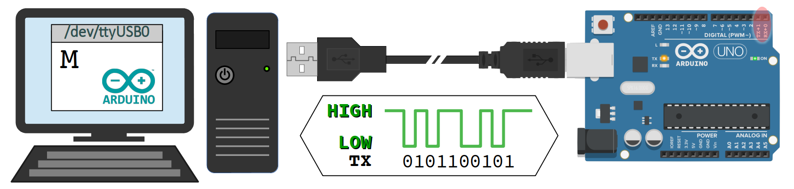
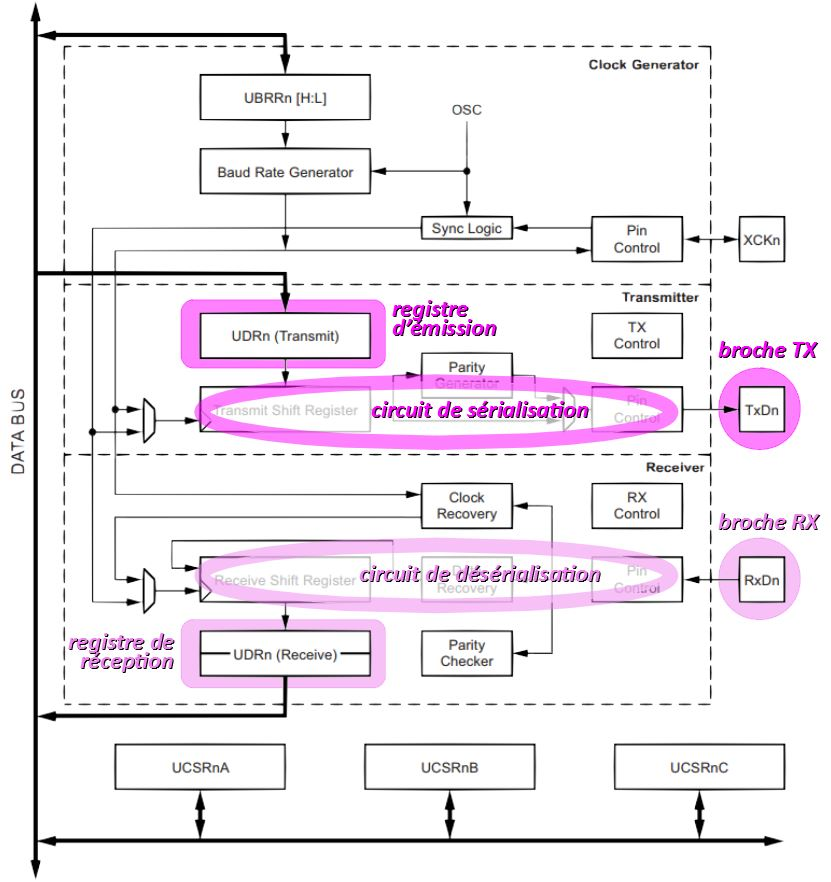
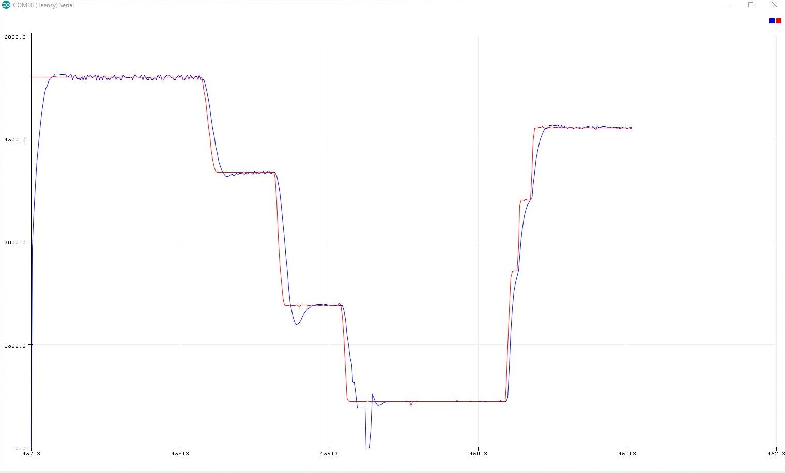
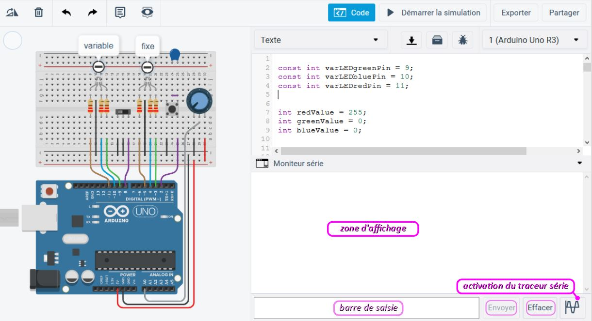

Comme remarqué au chapitre C2‑I , si une carte Arduino ne permet pas de mettre en œuvre des entrées-sorties standards, elle peut néanmoins échanger des données textuelles avec son terminal de programmation via une liaison série W. De manière générale, une liaison série est constituée d'un médium (c'est‑à‑dire un câble ou autre support de transmission) associé à un protocole de communication (cf. chap. R1‑IV R) permettant, entre deux systèmes numériques :
- d'établir la communication (avec, par exemple, un bit de start), c'est‑à‑dire préparer chaque système à la transmission de données ;
- de transmettre des données les unes après les autres sur le médium – ce que sous-tend le terme « série » ;
- de clore la communication (avec, par exemple, un bit de start), éventuellement avec des éléments de vérification de bonne transmission (typiquement, par contrôle de parité).
Parce qu'elles ne requièrent qu'un nombre minimal de conducteurs dans le support de transmission, les liaisons séries ont depuis longtemps supplanté les liaisons parallèles. Ainsi, un protocole série ancien comme l'UART (universal asynchronous receiver transmitter) W reste très employé en informatique embarquée. Et même s'il peut sembler simple par rapport à d'autres (Ethernet, etc.), sa mise en œuvre complète reste assez complexe Il ne suffit pas de quelques heures d'étude pour en comprendre tous les ressorts.
Heureusement, en programmation des microcontrôleurs, cette complexité est masquée par l'emploi de fonctions de haut niveau comme, par exemple, Serial.print dans le framework Arduino. Néanmoins, pour une bonne compréhension de ces fonctions, il est souhaitable de connaître quelques concepts et mécanismes sous‑jacents (buffer d'entrée‑sortie, circuit de sérialisation, etc.). Or certains de ces aspects font appel des notions de codage qui n'ont pas encore été étudiées : objets, chaînes de caractères, pointeurs, interruptions… certaines n'étant même pas au programme du module de formation au langage C.
Ce chapitre n'a pas vocation à exposer en détail tous les aspects d'une liaison série (pour des compléments, on pourra se reporter à ce cours destiné à des étudiants en STS SNIR ). L'objectif est ici d'aborder les principes essentiels de communication par liaison série, afin de pouvoir ensuite coder, avec quand même une bonne maîtrise, des opérations de lecture et d'écriture de données dans le moniteur série émulé par le logiciel Arduino IDE ou dans l'environnement de simulation Tinkercad. Seront donc étudiés dans l'ordre :
- des rudiments sur les aspects matériels d'une liaison série de type UART ;
- les éléments sur lesquels reposent aspects logiciels d'une telle liaison série dans le framework Arduino, notamment l'objet
Serialet ses buffers, ainsi que le moniteur série ; - les quelques fonctions d'administration d'une telle liaison série ;
- les principales fonctions associées aux opérations de sortie, c'est‑à‑dire d'écriture dans le moniteur série ;
- les principales fonctions associées aux opérations d'entrée, c'est‑à‑dire de lecture dans le moniteur série ;
sachant que ce sont ces deux dernières sections du chapitre qui apportent les éléments de langage les plus opérationnels dans le bagage d'un codeur.
Aspects matériels – généralités
Cas des cartes Arduino
Sauf exceptions, toute carte Arduino possède au moins (cf. chap. C1‑III ) :
- un USART W (universal synchronous & asynchronous receiver transmitter) intégré à son microcontrôleur principal ;
- un port USB avec, typiquement, un microcontrôleur dédié Atmel ATmega16U2 et un circuit oscillant externe à quartz 16 MHz, l'un et l'autre dédiés à l'interface USB‑serial.
Ces dispositifs permettent une mise en œuvre facile des communications par liaison série standard avec un autre système, notamment un terminal de programmation – cf. figure ci‑dessous.
Pour une liaison série, le médium de transmission employé usuellement est un câble USB (universal serial bus) raccordé au port USB de la carte.
Sur les carte Arduino les plus courantes, on peut aussi employer comme médium (cf. la carte Uno en figure ci‑contre) :
- une paire de fils torsadés reliée aux broches nº 0 et 1 du port numérique, lesquelles sont respectivement dédiées à l'émission (désignée TX) et à la réception (désignée RX) ;
- et un fil de masse relié à la borne GND, ce dernier fournissant le potentiel de référence pour déterminer les niveaux de tension bas et haut (respectivement 0 V et 5 V) sur les bornes TX et RX.
Par ailleurs, deux leds désignées également TX et RX donnent l'image des niveaux de tension sur les deux conducteurs correspondant de la liaison série. Leur clignotement témoigne de l'activité de l'USART (sachant que la led TX donne aussi l'image du niveau logique de tension sur la broche nº 1 lorsqu'elle est employée comme une sortie ordinaire).
La liaison série peut aussi être employée pour échanger des données entre une carte Arduino et un serveur de données, une machine, un instrument de musique…
Ports séries multiples
Sur certains modèles de cartes à microcontrôleur, il peut exister plusieurs autres paires de broches permettant la mise en œuvre d'une autre liaison série (par exemple, les broches nº 19 & 18, 17 & 16, 14 & 15 sur une Arduino Mega ou Due).
Schéma‑bloc de l'USART interne au microcontrôleur
Le schéma‑bloc ci‑dessous détaille l'implémentation matérielle de l'USART intégré au microcontrôleur Atmel ATmega328p, lequel équipe notamment les cartes Arduino Uno et Nano (cf. chap. C1‑III ).
Il est constitué de 3 principaux circuits :
- un circuit d'horloge (clock generator) qui, en divisant la fréquence du signal issu du circuit oscillant externe, génère le signal de cadencement de la liaison série à la vitesse spécifiée (baud rate) ;
- un circuit d'émission (transmitter) dédié à la sortie des données, qui est lui‑même composé :
- d'un registre d'émission pour stocker un octet à émettre ;
- et d'un sous‑circuit de sérialisation qui, à partir des bits de l'octet contenu dans le registre d'émission, génère à la fréquence du circuit d'horloge le signal logique à écrire sur la borne TX ;
- un circuit de réception (receiver) dédié à l'entrée des données, qui est lui‑même composé :
- d'un sous-circuit de désérialisation qui, à partir du signal logique reçu sur la borne RX, reconstitue un octet de donnée ;
- cet octet étant stocké dans le registre de réception ;
- d'un groupe de 3 registres, d'un octet chacun, pour stocker les bits d'état et de commande de l'USART, à des fins de contrôle logiciel.
Cas des cartes à SoC ESP8266 et ESP32
À la différence de la plupart des cartes Arduino authentiques, les cartes à SoC ESP8266 et ESP32 (cf. chap. C1‑III ) ne sont pas dotées d'un microcontrôleur et d'un quartz externe dédiés pour la conversion USB‑Serial.
Elles sont équipées à la place d'un ASIC W (application‑specific integrated circuit) qui intègre un circuit oscillant interne.
Néanmoins, en règle générale, on retrouve les mêmes fonctionnalités de liaisons séries que sur des cartes Arduino.
À titre d'exemple, la carte SBC‑NodeMCU de Joy‑It (cf. la figure ci‑contre dite pinout) permet deux liaisons séries UART :
- UART0 sur les broches GPIO nº 1 & 3 (TXD0 & RXD0) ;
- UART2 sur les broches GPIO nº 15 & 13 (TXD2 & RXD2) ;
sachant que la liaison UART0 est celle qui est prise en charge par défaut via le circuit convertisseur USB‑Serial CP2102.
Aspects logiciels – généralités
L'objet Serial
La liaison série entre une carte Arduino et le moniteur série de son terminal de programmation est une liaison asynchrone W spécifiée par le protocole UART.
Du point de vue logiciel, cette liaison est implémentée par défaut sur la base d'un objet désigné par l'identificateur Serial A.
Déclaration de l'objet Serial
Les notions de la programmation orientée objet n'ont pas été encore abordées, mais il est nécessaire d'y recourir pour bien comprendre l'emploi des fonctions d'entrées-sorties par moniteur série :
- L'objet
Serialest déclaré dans le fichierHardwareSerial0.cppcomme une instance de la classeHardwareSerial, laquelle est déclarée le fichier d'en‑têteHardwareSerial.h, inclus par défaut dans tout programme d'extension.inopar une directive codée dans le fichierArduino.hG (ligne nº 233). - La classe
HardwareSerialest elle‑même une fille de la classeStreamqui est déclarée dans fichier d'en‑têteStream.h, lequel est inclus par une directive codée dans le fichier d'en‑têteHardwareSerial.hG (ligne nº 29). - La classe
Streamest elle‑même une fille de la classePrintqui est déclarée dans le fichier d'en‑têtePrint.h, lequel est inclus par une directive codée dans le fichier d'en‑têteStream.hG(ligne nº 26).
Donc, en résumé :
L'objet Serial n'a pas besoin d'être déclaré par le codeur dans le code source des programmes pour cartes Arduino.
Buffers de l'objet Serial
D'une manière générale, tout objet est une variable structurée, définie avec divers attributs, c'est‑à‑dire des composantes de stockage de données (en quelque sorte, des « sous-variables »).
L'objet Serial possède deux attributs essentiels, protégés, issus de la classe HardwareSerial, déclarés dans le fichier d'en‑tête HardwareSerial.h G :
- le buffer de réception :
unsigned char _rx_buffer[SERIAL_RX_BUFFER_SIZE];
unsigned char _tx_buffer[SERIAL_TX_BUFFER_SIZE];
sachant qu'un buffer est un espace mémoire tampon permettant de stocker des données de façon temporaire.
Dans les instructions ci‑dessus, les deux buffers sont déclarés :
- comme des tableaux (notion abordée au chap. C5‑III ),
- dont les éléments sont de type
unsigned char, donc encodés en binaire naturel sur 1 octet (8 bits) chacun, - le nombre d'éléments étant respectivement spécifié par les pseudo‑constantes
SERIAL_RX_BUFFER_SIZEetSERIAL_TX_BUFFER_SIZE, définies dans le fichier d'en‑têteHardwareSerial.havec comme valeur par défaut :
Dans le framework Arduino, les identificateurs de ces deux pseudo‑constantes sont utilisables pour former des expressions dans les programmes sources.
De plus, les buffers d'émission et de réception de l'objet Serial sont l'un et l'autre implémentés de façon circulaire avec, pour chacun, un indice de queue (_buffer_tail) et un indice de tête (_buffer_head) W.
Chaque buffer est opéré avec une gestion des priorités comme celle d'une file d'attente FIFO (first in first out W) :
- l'indice de queue cible l'octet arrivé en premier dans le buffer (le plus ancien), qui doit être traité en premier ; il est incrémenté d'une unité à chaque octet traité ;
- l'indice de tête cible l'élément placé juste après l'octet arrivé en dernier dans le buffer (le plus récent), qui sera traité en dernier ; il est incrémenté d'une unité à chaque octet arrivé.
Sachant sa circularité, le buffer est donc :
- vide lorsque l'indice de queue est égal à l'indice de tête,
- plein lorsque l'indice de tête est égal moins une unité à l'indice de queue .
Avec cette structure de données, la capacité effective du buffer est inférieure d'une unité au nombre d'éléments du tableau (donc égal à 63 si la taille du tableau est 64).
En résumé, pour une mise en œuvre asynchrone de la liaison série :
L'objet Serial dispose, respectivement pour l'émission et la réception de données d'un buffer circulaire d'une capacité effective qui dépend du type de carte à microntrôleur employée, typiquement 63 octets pour une Arduino Uno.
Ces buffers constituent l'un et l'autre un espace mémoire tampon géré comme une file d'attente FIFO (first in first out) :
- avant sérialisation en signal logique de chaque octet émis vers le système auquel la carte est raccordée ;
- après désérialisation du signal logique de chaque octet reçu depuis le système auquel la carte est raccordée.
Ports séries multiples
Pour les cartes Arduino disposant de plusieurs ports séries (Mega, Due…), le fichier HardwareSerial0.cpp déclare des instances supplémentaires de la classe HardwareSerial, qui sont identifiées respectivement Serial1, Serial2 et Serial3.
Ces objets ont exactement les mêmes propriétés que l'objet Serial.
Méthodes associées à l'objet Serial
Dans la logique de la programmation orientée objet, un objet se manipule à l'aide de méthodes, c'est‑à‑dire des fonctions dédiées qui sont définies dans la déclaration de la classe à laquelle l'objet appartient ou des classes dont il descend (c'est la notion d'héritage).
L'objet Serial compte 20 méthodes, recensées sur la page de référence A. On peut les classer en trois catégories comme dans le tableau ci‑dessous.
| Administration | begin end |
|---|---|
| Écriture | availableForWrite flush print println write |
| Lecture | available find findUntil parseFloat parseInt peek read readBytes readByteUntil readString serialEvent setTimeout |
Toutes ces méthodes ne peuvent être appelées que via l'opérateur de sélection, codé par le symbole . et appliqué à l'objet Serial (ou un autre objet de la même classe).
Pour mettre fin à la liaison série entre une carte Arduino et un terminal, on code une instruction appelant la méthode end via la syntaxe :
Serial.end();
Cas des cartes à SoC ESP8266 et ESP32
Dans le cas des cartes à SoC ESP8266 et ESP32 (cf. supra ), les fichiers de bibliothèque qui implémente les liaisons série UART (HardwareSerial.h, etc.) sont similaires à ceux pour les cartes Arduino, mais pas identiques. En effet :
Le moniteur série
L'application Arduino IDE émule un moniteur série dans une fenêtre indépendante pour visualiser et saisir des entrées-sorties codées dans un programme.
La fenêtre du moniteur est ouverte par une commande du menu « Outils » de la fenêtre principale de l'application, ou en cliquant sur un bouton de raccourci en haut à droite (cf. chap. C1‑III ). Elle présente :
- en haut, une barre de saisie pour les entrées de la carte, qui sont envoyées après un clic sur le bouton éponyme ;
- au centre, une zone d'affichage pour les sorties de la carte ;
- en bas, une barre de paramétrage de la liaison, en particulier de sa vitesse.
La barre de saisie et la zone d'affichage opèrent l'une comme l'autre au format UTF‑8 qui est, rappelons-le, compatible avec le jeu de caractères ASCII restreint (cf. chap. C3‑IX ).
Vitesse de transmission
Dans une liaison asynchrone où les deux machines ne partagent pas d'horloge commune, il est indispensable qu chacune ajuste son horloge à la même fréquence pour qu'aucun écart significatif ne se creuse au cours de la transmission. La valeur de cette fréquence conditionne directement la vitesse de transmission.
Dans une transmission en série, l'unité de vitesse est le baud W (symbole Bd), défini comme égal à 1 symbole par seconde, le symbole étant l'entité fondamentale transmise. Dans la plupart des cas, et notamment avec les cartes Arduino, le symbole est simplement le bit, et on a donc :
Concrètement on spécifie la vitesse de transmission :
- au niveau de la carte, dans le code source du programme, en argument d'appel de la méthode
begin(cf. infra ) ; - au niveau du terminal, dans un menu déroulant de la barre de paramétrage de la fenêtre du moniteur série.
Les valeurs standards vont de 300 à 2 000 000 Bd. Pour faire un bon choix, il faut avoir en tête les considérations suivantes :
- La valeur 9600 Bd est restée durant longtemps la vitesse par défaut. C'est un choix « historique » qui aujourd'hui peut être pénalisant pour la réactivité du programme. En effet, sachant qu'il faut au minimum 10 bits pour transmettre un octet, il faut compter environ 1 ms par octet transmis avec cette vitesse. Si le buffer d'émission en vient à être saturé, l'exécution du programme va inévitablement ralentir dans des proportions inacceptables pour un système temps‑réel.
- La valeur 115200 Bd est aujourd'hui celle qui est employée préférentiellement. Elle est environ 10 fois supérieure à la précédente.
Le traceur série
En alternative au moniteur série, l'application Arduino IDE permet d'afficher sous forme graphique les valeurs numériques de sortie d'une carte à microcontrôleur.
Ce mode d'affichage est activé via la commande « Traceur série » du menu « Outils », à condition que le moniteur série ne soit pas lui-même déjà activé (il suffit alors de fermer sa fenêtre).
Pour chaque variable du programme exécuté dans la carte, dont les valeurs sont envoyées via la liaison série par une instruction répétitive (c'est‑à‑dire codée dans la fonction loop) de la forme :
Serial.print(identificateur); (cf. infra )
le traceur trace sur un diagramme cartésien une courbe dont les points ont pour abscisse l'instant de réception et pour ordonnée la valeur de la variable transmise à cet instant.
On voit donc apparaître sur le diagramme autant de courbes de que variables suivies, chacune étant tracée avec une couleur distincte, automatiquement choisie.
La capture d'écran ci‑dessous montre l'affichage du traceur série lors de l'exécution d'un programme d'asservissement en fréquence de rotation d'un moteur à courant continu, avec 2 variables tracées : la consigne de fréquence de rotation et la mesure de fréquence de rotation.
Dans l'environnement en ligne Tinkercad
L'environnement de simulation Tinkercad permet de simuler le moniteur série comme si une vraie carte était reliée à l'ordinateur par liaison série.
Dans une fenêtre de circuit dont le volet code est ouvert, la simulation du moniteur série est activée par un clic en bas du volet.
Il apparaît alors un zone d'affichage pour visualiser les sorties et en dessous une barre de saisie pour taper au clavier des entrées, à valider en cliquant sur le bouton de droite « envoyer ».
Il n'est pas nécessaire de paramétrer la vitesse de transmission : elle s'ajuste automatiquement à celle du code source (il ne s'agit pas d'une véritable liaison série mais d'une simulation).
En plus du bouton « envoyer », les deux autres boutons à droite dans la barre de saisie ont respectivement pour fonction :
- d'effacer le contenu de la zone d'affichage,
- d'activer le mode traceur série.
L'environnement Tinkercad ne simule pas bien certains aspects du fonctionnement de l'application Arduino IDE. En particulier, la fenêtre du moniteur série n'interprète pas les octets au format UTF-8, mais en ASCII. En conséquence, les caractères accentués ne passent pas correctement.
Administration d'une liaison série
Initialisation
Même si les objets comme Serial sont déjà déclarés par défaut, toute liaison série doit impérativement être initialisée avant d'être opérationnelle.
Dans le cas de la liaison usuelle avec le terminal de programmation, l'initialisation est effectuée par une instruction d'appel de la méthode begin de la forme :
Serial.begin(vitesse); A
dont l'argument vitesse est une expression à valeur dans le type unsigned long qui spécifie la vitesse de transmission en baud.
En fait, la méthode begin possède une syntaxe générale d'appel plus détaillée. Elle admet un deuxième argument nommé config qui spécifie par une pseudo‑constantes de la forme SERIAL_xLy les options possibles du protocole UART, où :
- x est un nombre allant de
5à8qui code nombre de bits de données du mot transmis (code8par défaut) ; - L est une lettre qui code le contrôle de parité W mis en œuvre, avec
Npour no parity (code par défaut),Epour even parity (parité paire) ou0pour odd parity (parité impaire) ; - y est un nombre à un chiffre valant
1ou2pour coder nombre de bits de stop marquant la fin d'émission (code1par défaut).
La pseudo‑constante par défaut est donc SERIAL_8N1 (transmission par mots de 8 bits sans contrôle de parité et avec un seul bit de stop).
L'exécution de l'appel de la méthode begin :
- procède simplement au paramétrage du protocole UART ;
- n'engendre aucun signal logique sur les broches TX et RX associées à la liaison série ;
- opère même en l'absence de medium de transmission (câble USB ou autre) ;
- peut, sur certaines cartes (notamment celles à SoC ESP8266 et ESP32) être parasitée par le téléversement ou la réinitialisation du programme, avec :
- l'affichage d'une chaîne de caractères inattendus dits garbage (déchets) ou gibberish (charabia), typiquement :
⸮⸮⸮⸮⸮⸮⸮⸮⸮⸮⸮⸮⸮⸮⸮⸮⸮⸮⸮⸮⸮⸮⸮⸮
print ou println ;
void setup() {
delay(500);
Serial.begin(115200);
Serial.println();
…
Terminaison
Pour coder la terminaison de la liaison série, il suffit d'appeler la méthode end dans une instruction de la forme :
Serial.end(); A
Ensuite, pour réactiver la liaison série, il suffit d'appeler à nouveau la méthode begin.
Clore la liaison série permet d'employer autrement les broches nº 0 et 1 du port numérique auxquelles la liaison est associée, sans risque de voir les niveaux logiques sur ces broches perturbés.
La première instruction dans le code de définition de la méthode end est un appel de la méthode flush afin de laisser le temps d'achever les émissions en cours (cf. infra ).
Test
Le test if (Serial)… A est implémenté par surcharge de l'opérateur bool() pour déterminer si la liaison série USB est « ouverte ». Il n'est valable que pour les très rares cartes Arduino ayant un port USB natif , donc pas pour les modèles usuels de cartes (Uno, Mega, Nano, etc.).
En revanche, ce test peut être employé pour une carte Arduino Due. L'objet associé à son port natif étant identifié par SerialUSB, l'expression SerialUSB prend la valeur 1 (true) :
- si la carte est bien raccordée à un terminal via un câble USB,
- et si la liaison série est opérationnelle, par exemple si le numéro de port est bien sélectionné avec le logiciel Arduino IDE et si le moniteur série est activé.
Sinon, l'expression SerialUSB prend la valeur 0 (false).
Opérations de sortie par liaison série
Principe général d'une opération de sortie
Dès lors qu'une liaison série est initialisée par un programme sur une carte Arduino, effectuer une opération de sortie, c'est‑à‑dire l'émission de données par la carte se déroule en 3 étapes :
- Les données sont d'abord écrites octet par octet dans le buffer d'émission de l'objet
Serialassocié à la liaison, sachant que chaque octet écrit occupe un élément du buffer. - Tant que le buffer n'est pas vide, ces octets sont ensuite l'un après l'autre sérialisés en signal logique par l'USART ;
- Enfin, la réception et le traitement des données émises sont pris en charge par le système avec lequel la carte communique, donc au rythme de ce système, et indépendamment de l'exécution du programme sur la carte.
- l'occupation d'un élément du buffer d'émission s'effectue simplement par incrémentation unitaire de l'indice de tête du buffer ;
- la libération d'un élément du buffer d'émission s'effectue par incrémentation unitaire de l'indice de queue du buffer ;
Si l'indice de tête « rattrape » l'indice de queue (moins une unité), le buffer est plein.
Quant à l'USART, il opère en arrière-plan de l'exécution du programme sur le microcontrôleur :
- sur déclenchement d'une interruption, l'octet de queue du buffer d'émission est d'abord copié dans le registre d'émission, ce qui libère un élément du buffer d'émission ;
- l'USART sérialise les bits de l'octet stocké dans le registre d'émission et génére un signal logique conforme au protocole UART sur la broche TX associée à la liaison série ;
- lorsque la génération du signal logique est achevée, l'USART déclenche une interruption pour signifier que son registre d'émission est prêt pour la sérialisation d'un nouvel octet ;
ce processus étant mis en œuvre même en l'absence de medium de transmission branché à la carte (câble USB ou autre).
Lorsque le buffer d'émission est vide, l'octet à émettre est directement copié dans le registre d'émission de l'USART, ce qui augmente significativement la vitesse maximale de transmission possible.
Modes d'écriture
Pour programmer une émission de données, le codeur dispose principalement de deux modes d'écriture :
- par octets, via la méthode
write(mode dit de bas niveau) ; - par caractères, via les méthodes
printetprintln(mode dit de haut niveau, car au format UTF‑8, un caractère peut être encodé sur plusieurs octets).
Les méthodes (ou fonctions) d'écriture sont héritées de la classe Print, et sont définies dans le fichier Print.cpp.
Les méthodes d'écriture font elle‑même appel à des méthodes de très bas niveau définies dans le fichier HardwareSerial.cpp, en particulier :
- la méthode
writepour écrire un nouvel octet en tête du buffer d'émission (cet octet étant le dernier entré parmi de tous ceux déjà présents dans le buffer, il sera donc le dernier à sortir) ; - la méthode
_tx_udr_empty_irqpour copier l'octet en queue de buffer d'émission dans le registre d'émission (cet octet étant alors le premier entré parmi de tous ceux présents dans le buffer, il est donc le premier à sortir).
Même si elles sont publiques, ces deux méthodes n'ont pas vocation à être appelée dans un programme codé sur une carte Arduino.
La méthode write de très bas niveau définie dans le fichier HardwareSerial.cpp ne doit pas être confondue avec celle ayant le même identificateur mais définie dans le fichier Print.cpp.
Écriture par octets
La méthode write définie dans le fichier Print.cpp est une fonction de bas niveau qui procède par octets. Un appel de la forme :
Serial.write(expression) A
écrit octet par octet la valeur de l'expression en tête du buffer d'émission de l'objet Serial.
- La méthode
writeretourne le nombre d'octets écrits, encodé dans le typesize_t. Mais cette valeur est rarement exploitée ; usuellement, l'appel est codé comme une simple instruction. - Dans le moniteur série, les octets reçus sont interprétés au format UTF‑8 et affichés comme des caractères, ce qui peut prêter à confusion sur le mode d'écriture de la méthode
write, qui procède bien par octets.
L'expression passée en argument de la méthode write peut être de type :
- entier, et en particulier codée par une valeur de caractère saisie entre guillemets simples
''; - chaîne de caractère, et en particulier codée par suite de caractères simples ou étendus encadrée par des guillemets doubles
"".
- Si l'argument expression est de type entier :
- L'instruction
Serial.write(65);écrit l'octet de valeur65(ou0x41) dans le buffer d'émission. Interprété au format UTF‑8, il devientAdans la zone d'affichage, car65est le code de la lettre « A » (cf. chap. C3‑VIII ). - L'instruction
Serial.write(65 + 256);donne exactement le même résultat parce qu'un octet encode 256 valeurs entières, donc le rebouclage opère modulo 256. - L'instruction
Serial.write('A');donne aussi le même résultat parce que la valeur de caractère'A'est évaluée par son code UTF‑8, à savoir l'entier65. - L'instruction
Serial.write(128);écrit l'octet de valeur128(ou0x80) dans le buffer d'émission. Mais comme128ne correspond pas dans le format UTF‑8 à un code de caractère affichable, il n'apparaît qu'un symbole générique «⍰» dans la zone d'affichage. - L'instruction
Serial.write('é');écrit l'octet de valeur169(ou0xA9) dans le buffer d'émission car c'est la valeur de l'octet de poids faible du code UTF‑8 du caractère'é'. Mais comme169ne correspond pas dans le format UTF‑8 à un code de caractère affichable, il n'apparaît qu'un symbole générique «⍰» dans la zone d'affichage. - Si l'argument expression est de type chaîne de caractères :
- L'instruction
Serial.write("C++");écrit les codes UTF‑867('C'),43('+') et43('+') dans le buffer d'émission. Dans le moniteur série, ils sont interprétés comme tels pour former le motC++sur la zone d'affichage. - L'instruction
Serial.write("é");écrit le code UTF‑80xC3A9, soit les deux octets de valeur décimale169(0xA9) et195(0xC3) dans le buffer d'émission. Dans la zone d'affichage du moniteur série, ils formeront la chaîne composée d'un seul caractèreé.
unsigned char, avec rebouclage cyclique éventuel (cf. chap. C3‑VI . S'il s'agit d'une valeur de caractère saisie entre guillemets simples seul l'octet de poids faible de son code UTF‑8 est retenu. Dans tous les cas, un seul octet est écrit en tête du buffer d'émission.
Dans tous les exemples ci‑dessous, on fait l'hypothèse que le programme s'exécute sur une carte Arduino reliée à un terminal de programmation où le moniteur série est activé. La liaison série est supposée initialisée correctement.
Comme précédemment, on fait l'hypothèse que le programme s'exécute sur une carte Arduino reliée à un terminal de programmation où le moniteur série est activé, la liaison série étant initialisée.
Serial.write("é"); affiche la chaîne de caractères é dans la fenêtre de simulation du moniteur série. Ces deux caractères correspondent respectivement aux valeurs de caractères des codes ASCII étendus 0xC3 et 0xC3A9 de la page de code 1252 (cf. chap. C3‑VIII ).
Limitation du nombre d'octets émis
Dans le cas où l'expression est une chaîne de caractères, on peut limiter le nombre n d'octets effectivement écrits en tête du buffer d'émission de l'objet Serial par un argument optionnel de type size_t dans l'appel de la méthode.
Il suffit pour cela d'employer la syntaxe d'appel :
Serial.write(expression [, n])
L'instruction Serial.write("Bonjour", 3); affiche la chaîne tronquée Bon (3 premiers caractères) sur le moniteur série.
Écriture par caractères
Principe de l'écriture par caractères
Les méthodes print et println sont des fonctions similaires à write, mais elles opèrent à plus haut niveau : elles acceptent également comme argument principal une expression à valeurs numériques entières ou décimales, et non plus seulement un octet ou une chaîne d'octets.
Le principe de traitement est le suivant :
- Une fois que l'expression est évaluée, la valeur numérique obtenue est éventuellement convertie dans une autre base de numération, ou encore tronquée, si un argument optionnel de format est codé dans l'appel de la méthode.
- Cette valeur numérique est alors est interprétée non pas dans son format usuel d'encodage mais comme une chaîne de caractères codés en ASCII.
- Les octets constituant les codes ASCII de chaque chiffre ou symbole de la chaîne de caractères sont ensuite écrits l'un après l'autre dans le buffer d'émission.
Ensuite, le procédé suit le même cours qu'avec la méthode write : les octets contenus dans le buffer d'émission sont copiés l'un après l'autre dans le registre d'émission pour y être sérialisés. S'ils sont émis par l'USART à destination du moniteur série, ils seront interprétés – et donc affichés – comme des caractères au format UTF‑8.
Pour bien comprendre la différence avec la méthode write, comparons l'affichage obtenu pour le même argument qu'au 1er exemple supra (pour mémoire, l'instruction Serial.write(65); affiche A sur le moniteur série car 65 est le code UTF‑8 du caractère « A »).
Dans l'instruction Serial.print(65); l'argument 65 est lu par le compilateur non pas comme le code UTF‑8 d'un caractère mais comme le nombre entier 65. Il est interprété comme la chaîne constituée des caractères '6' et '5' qui sont l'un après l'autre affichés sur le moniteur série pour former la chaîne 65 (et non pas la lettre A).
Ainsi, on pourrait avoir l'illusion que c'est la valeur entière 65 (encodée en binaire) qui a été transmise, mais il n'en est rien : c'est une chaîne de caractères.
L'instruction Serial.print('A'); produit le même effet que Serial.write('A');, à savoir l'émission du code UTF‑8 du caractère « A » passé en argument, qui est ensuite affiché A sur le moniteur série.
Syntaxes d'appel
Les méthodes print et println obéissent à une syntaxe d'appel plus variée que write. Elle dépend de l'expression passée en premier argument, qui peut être de type :
- entier,
- décimal,
- caractère ou chaîne de caractère,
sachant que dans tous les cas, l'expression peut en particulier être codée par une constante littérale avec la syntaxe appropriée (cf. les chapitres précédents et spécifiquement le chapitre C5‑VI pour les chaînes de caractères).
-
Si l'expression est à valeur entière, signée ou non, alors la syntaxe d'appel est :
Serial.print(expression [, base])A
où l'argument optionnel base spécifie la base de numération de la valeur formatée à écrire en tête du buffer d'émission de l'objetSerial.Ce formatage est appliqué quel que soit le préfixe (
0x,0b…) éventuellement spécifié dans l'expression passée comme premier argument.L'argument optionnel base peut être codé :
- par n'importe quelle expression prenant la valeur
2,8,10ou16; - où, pour une meilleure lisibilité, par l'une des pseudo-constantes
BIN,OCT,DECouHEXdéfinies dans le fichier d'en‑têtePrint.h;
sachant que c'est par défaut la base 10 de formatage qui est adoptée.
Comme précédemment, on fait l'hypothèse que le programme s'exécute sur une carte Arduino reliée à un terminal de programmation où le moniteur série est activé, la liaison série étant initialisée.
- L'instruction
Serial.print(6, BIN);affiche la chaîne de caractères110. - convertit la valeur
6en base 2, aboutissant au nombre binaire110, - convertit ce nombre binaire en la chaîne de trois caractères
'1','1'et'0', - convertit ces caractères en leurs codes ASCII
0x31,0x31et0x30, - écrit ces octets de code dans le buffer d'émission.
- L'instruction
Serial.print(0b1111, HEX);affiche la chaîne de caractèresF. - convertit la valeur binaire
1111en base 16, aboutissant au nombre à un seul digitF; - convertit ce digit en son code ASCII
0x46, - écrit cet octet de code dans le buffer d'émission.
Plus précisément, cette instruction :Copiés l'un après l'autre dans le registre d'émission, puis sérialisés par l'USART, ces octets sont interprétés par le moniteur série comme des codes UTF‑8 (identiques aux codes ASCII restreints). Les caractère qui s'affichent sont donc les digits binaires de la constante littérale6passée en argument.Plus précisément, cette instruction :Comme pour l'exemple précédent, cet octet est ensuite interprété comme un code UTF‑8 et apparaît donc commeFdans la zone d'affichage. - par n'importe quelle expression prenant la valeur
-
Si expression est à valeur décimale (c'est‑à‑dire codé dans un type flottant) alors la syntaxe d'appel est :
Serial.print(expression [, digit])A
où l'argument optionnel digit spécifie le nombre de décimales près auquel arrondir la valeur formatée écrite en tête du buffer d'émission de l'objetSerial.L'argument optionnel digit peut être codé par n'importe quelle expression à valeur entière positive ou nulle.
En principe, toutes les décimales spécifiées supplémentaires à celles encodées dans le type flottant de l'expression passée en premier argument sont formatées
0.Comme précédemment, on fait l'hypothèse que le programme s'exécute sur une carte Arduino reliée à un terminal de programmation où le moniteur série est activé, la liaison série étant initialisée.
- L'instruction
Serial.print(12.345678, 3);affiche la chaîne de caractères12.346 - arrondit à
12.346la valeur formatée (la 3e décimale est passée à la valeur entière supérieure parce que la décimale suivante6est supérieure où égale à 5) ; - convertit cette valeur numérique en la chaîne de caractères
"12.346"; - convertit chaque caractère de cette chaîne en son code ASCII ;
- écrit ces octets de code dans le buffer d'émission.
- L'instruction
Serial.print(PI, 25)affiche :
3.1415927410125732421875000
sur le moniteur série (pour mémoire, le nombre π vaut 3,14159265 à 10−8 près). - L'instruction
Serial.print(123456789.012345, 2)affiche :
123456792.00
sur le moniteur série.
Plus précisément, cette instruction :Interprétés comme des codes UTF‑8, ils formeront la chaîne de caractères décimaux souhaitée dans la zone d'affichage.Le fait de spécifier 25 décimales n'apporte pas de précision supplémentaire au nombre affiché, qui reste tributaire de la résolution du typedoubledans lequel la pseudo-constantePI(définie pourtant avec 31 décimales dans le fichierArduino.h) est implicitement convertie, sachant que sur une carte Uno, le typedoubleest implémenté avec la même précision que le typefloat(cf. chap. C3‑V ).Là encore, le nombre affiché diffère de celui spécifié à cause de sa conversion implicite dans le typedoublequi n'est implémenté qu'en simple précision. - L'instruction
-
Si l'expression prend une valeur de caractère ou de chaîne de caractères, alors la syntaxe d'appel est simplement :
Serial.print(expression)A
avec des résultats identiques à ceux obtenus par appel de la méthodewrite(cf. supra ).Dans la zone d'affichage du moniteur série :
-
Serial.print('e')donneemaisSerial.print('é')donne⍰; -
Serial.print("Hé")donneHé.
-
Spécificité de la méthode println
La méthode println A obéit à la même syntaxe que print.
Sa spécificité est qu'elle écrit en plus un saut de ligne après le dernier octet encodant l'expression passée en argument principal.
Ce saut de ligne est constitué de deux caractères spéciaux :
- un caractère retour chariot
'\r'(carriage return), code ASCII ou UTF‑80x0D; - un caractère nouvelle ligne
'\n'(new line ou line feed), code ASCII ou UTF‑80x0A.
Les sauts de ligne émis à destination du moniteur série sont toujours effectifs dans la zone d'affichage quel que soit le paramétrage choisi dans le menu déroulant situé bas de la fenêtre – cf. supra . En effet, ce dernier ne s'applique à qu'à la barre de saisie et non pas à la zone d'affichage.
Gestion du buffer d'émission
On vient de voir que les méthodes write ou print(ln) se résument in fine à écrire des octets en tête de buffer d'émission.
Quant au transfert de ces octets dans le registre d'émission puis leur sérialisation en signal logique sur la broche TX, cela est effectué en arrière-plan de l'exécution du programme.
Mais, tant qu'ils ne sont pas émis, les octets restent stockés dans le buffer d'émission. Donc si trop de d'opérations de sortie sont codées, le buffer se remplit plus vite qu'il ne se vide et on s'achemine vers une saturation au sens où le buffer est plein.
En cas de saturation du buffer d'émission, tout nouvel appel d'une méthode de sortie ne provoque pas d'écrasement d'octets.
En revanche, l'exécution de ce nouvel appel comprend une attente de libération d'éléments dans le buffer d'émission jusqu'à ce que tous les octets de l'expression passée en argument y soient écrits.
La préservation de l'intégrité des données se paye donc par une potentielle baisse de réactivité du programme. Pour prévenir ce phénomène, le module de bibliothèque HardwareSerial fournit :
-
flushA, une méthode pour attendre que le buffer soit vide ; -
availableForWriteA, une méthode pour connaître le nombre d'éléments disponibles dans le buffer.
La méthode flush
La méthode flush est une fonction sans argument et qui ne retourne aucune valeur. Elle suspend l'exécution du programme jusqu'à ce que tous les octets stockés dans le buffer d'émission aient été envoyés, avant de passer à l'exécution de l'instruction suivante.
Ainsi, le codage d'une instruction :
Serial.flush();
garantit, immédiatement après, la disponibilité maximale du buffer d'émission.
En contre-partie, l'appel de la méthode flush demande un temps d'exécution d'autant plus long que le buffer est rempli. L'idéal est de la programmer durant une phase d'exécution qui n'est pas soumises à des exigences de vitesse trop sévères.
On peut coder également coder l'appel de flush dans une instruction conditionnelle, en testant la valeur du nombre d'éléments disponibles en écriture à l'aide de la méthode availableForWrite (cf. infra).
La méthode availableForWrite
La méthode availableForWrite est une fonction sans argument qui retourne dans le type int le nombre d'éléments vacants dans le buffer d'émission .
Cette méthode permet aussi de déterminer par complément le nombre d'éléments en attente d'envoi dans le buffer d'émission associé à l'objet Serial. Il suffit de coder l'expression :
SERIAL_TX_BUFFER_SIZE - 1 - Serial.availableForWrite()
Grâce à la connaissance du nombre d'éléments vacants dans le buffer d'émission, en cas d'impératifs de rapidité, on peut alors conditionner l'appel d'une méthode de sortie, sachant par ailleurs le nombre d'octets à émettre que cette sortie suppose.
if (Serial.availableForWrite() >= 17) { // message not urgent
Serial.println("Wait, please...");
}
La chaîne de caractères à envoyer ne compte que 15 octets, mais on compare ici à la valeur 17.
En effet, avant de programmer une sortie série par la méthode println, il faut aussi tenir compte des deux caractères spéciaux de saut de ligne (et pas seulement les caractères de la chaîne ou de la valeur numérique à émettre) pour vérifier s'il y a suffisamment d'éléments vacants dans le buffer d'émission.
Gestion de la zone d'affichage du moniteur série
Il est juste destiné à la mise au point des programmes (debugging).
À l'heure actuelle (cf. la date de version en haut de cette page web), dans les bibliothèques Arduino, il n'existe pas de méthode pour effacer le contenu de la zone d'affichage du moniteur série.
Il est également impossible d'opérer un retour en arrière dans une ligne pour en modifier l'affichage par écrasement.
En effet, lorsqu'ils sont émis via un appel de write ou de toute autre méthode d'écriture, les caractères de contrôle :
- backspace (code UTF‑8 ou ASCII
0x08), - ou delete (code UTF‑8 ou ASCII
0xF7),
ne sont pas exécutés par le moniteur série. Ils sont simplement représentés dans la zone d'affichage par le symbole générique « □ » comme tous les caractères de contrôle.
Le seul pis-aller consiste à cliquer sur le bouton « Effacer la sortie » en bas à droite de la fenêtre du moniteur série pour effacer « manuellement » le contenu de la zone d'affichage. Mais une telle action ne peut pas être codée dans le programme embarqué sur une carte Arduino.
Opérations de lecture par liaison série
Principe général d'une opération d'entrée
Dès lors qu'une liaison série est initialisée par un programme sur une carte Arduino, une opération d'entrée, c'est‑à‑dire une reception de données sur la carte se déroule en 3 étapes :
- Il faut d'abord que les données soient envoyées sous la forme d'un signal logique conforme au protocole UART sur la broche RX associée à la liaison série.
- Détecté par l'USART en arrière-plan de l'exécution du programme, ce signal logique est désérialisé octet par octet. Chaque octet est stocké en tête du buffer de réception, et occupe donc un élément de plus dans ce buffer.
- C'est seulement alors qu'un appel d'une méthodes de lecture opère ; elle retourne une valeur formée à partir des octets stockés dans le buffer de réception et, éventuellement (cf. infra ), libère un élément du buffer.
Plus précisément, tout octet issu de la désérialisation d'un signal logique reçu sur la broche RX est d'abord stocké dans le registre de réception. Chaque nouvel octet déclenche une interruption du programme, qui appelle la méthode _rx_complete_irq définie dans le fichier HardWareSerial_private.h.
Cette méthode _rx_complete_irq vérifie que le buffer de réception de l'objet Serial n'est pas plein :
- si tel est le cas, l'octet du registre de réception est alors écrit en tête de buffer, et donc occupe cet élément, cette occupation étant implémentée par l'incrémentation unitaire de l'indice de tête du buffer ;
- sinon, l'octet est perdu (il sera écrasé par le prochain octet désérialisé issu d'un nouveau signal logique reçu alors que le buffer de réception dispose enfin d'éléments vacants).
Le processus d'écriture d'octets dans le buffer de réception se répète tant que l'USART détecte un nouveau signal logique sur la broche RX. Comme pour celui d'émission, le buffer de réception n'est plein que quand l'indice de tête n'est plus qu'à une unité de l'indice de queue.
Méthodes de lecture
La bibliothèque Arduino met à disposition du codeur une dizaine de méthodes de lecture associées à l'objet Serial. On peut les classer en deux catégories :
- les méthodes de bas niveau
available,peeketread, définies dans le fichierhardwareSerial.cpp; - les méthodes de haut niveau, notamment
readString,parseIntouparseFloat, définies dans le fichierStream.cpp.
Seules les méthodes citées ci‑dessus seront détaillées ci‑après. Pour les autres, on se reportera au lien suivant A.
Temporisation des méthodes de haut niveau
Contrairement à celles de bas niveau dont la valeur de retour est « immédiate », les méthodes de lecture de haut niveau sont basées sur des méthodes protégées (non appelables par le codeur).
En particulier, elles emploient la méthode protégée de lecture unitaire timedRead qui opère de façon temporisée avec réitération de la lecture jusqu'à expiration d'un délai d'abandon.
La durée de ce délai est fixée par un attribut de la classe Stream : la variable de type unsigned long nommée _timeOut.
Cette variable _timeOut prend la valeur 1000 par défaut, exprimée en millisecondes (soit une seconde). Protégée, elle n'est consultable et modifiable que via des méthodes spécifiques (cf. infra ).
Gestion des fins de ligne dans la barre de saisie
Lorsque la barre de saisie du moniteur série est active (état signalé par le curseur clignotant dans la barre), l'appui sur la touche « entrée » ↵ du clavier est traité de différentes manières selon l'option choisie dans le menu déroulant en bas de la fenêtre (cf. la capture d'écran ci‑contre).
Cet appui ajoute dans le buffer de réception zéro, un ou deux des caractères de contrôle ci‑dessous :
- le caractère retour chariot
'\r'(carriage return CR), dont le code ASCII ou UTF‑8 est0x0D; - le caractère nouvelle ligne
'\n'(new line NL ou line feed LF), dont le code ASCII ou UTF‑8 est0x0A.
Lecture unitaire d'octets
Les méthodes read et peek sont deux méthodes de lecture de bas niveau qui ne lisent qu'un un seul octet par appel : celui situé en queue du buffer de réception de l'objet Serial.
La méthode read
L'expression :
Serial.read()
A
retourne immédiatement une valeur entière de type int qui peut être :
-
-1si le buffer de réception de l'objetSerialest vide ; - sinon égale à l'octet lu en queue du buffer réception, ce qui libère cet élément du buffer.
La libération d'un élément du buffer de réception consiste simplement en l'incrémentation unitaire de son indice de queue.
Des appels successifs de la méthode read permettent de lire l'un après l'autre tous les octets stockés dans le buffer de réception.
Comme précédemment, on fait l'hypothèse que le programme s'exécute sur une carte Arduino reliée à un terminal de programmation où le moniteur série est activé, la liaison série étant initialisée.
De plus, on suppose qu'avant la saisie, le buffer de réception est vide et que l'option pas de fin de ligne est choisie dans les options de saisie du moniteur série.
- Après saisie et envoi de la lettre
A, l'évaluation de l'expressionSerial.read()retourne la valeur entière65qui est le code UTF‑8 du caractère « A ». - Après saisie et envoi du nombre
65, l'évaluation de l'expressionSerial.read()retourne la valeur entière54qui est le code UTF‑8 du caractère « 6 ». - Après frappe et envoi de la lettre
é, l'évaluation de l'expressionSerial.read()retourne la valeur entière195(c'est‑à‑dire0xC3)qui est l'octet de poids fort du code UTF‑8 du caractère « é ».
53 qui est le code UTF‑8 du caractère « 5 ». Une nouvelle évaluation de Serial.read() retournerait cette valeur. 169 (c'est‑à‑dire 0xA9) qui est l'octet de poids faible du code UTF‑8 du caractère « é ». Une nouvelle évaluation de Serial.read() retournerait cette valeur. La méthode peek
L'expression :
Serial.peek()
A
retourne la même valeur que la méthode read, mais sans libérer l'élément correspondant dans le buffer de réception.
On fait les mêmes hypothèses que pour les exemples donnés supra d'application de la méthode read.
Après saisie et envoi de la lettre A, l'évaluation de l'expression Serial.peek() retourne la valeur entière 65 qui est le code UTF‑8 du caractère « A ».
Suite à cet appel, le buffer de réception est inchangé. Une nouvelle évaluation de Serial.peek() retourne la même valeur.
La méthode peek ne permet donc pas de scanner tout le contenu du buffer de réception, seulement son octet de queue (des appels successifs de cette méthode rendent toujours la même valeur tant qu'une méthode de lecture comme read n'a pas été appelée).
Lecture de chaînes de caractères
L'expression :
Serial.readString()
A
procède par lecture unitaire temporisée de tous les octets du buffer de réception de l'objet Serial.
Elle retourne une valeur de chaîne de caractère de classe String qui peut être :
- la chaîne vide (réduite au caractère de fin de chaîne NUL) si le nombre d'octets lus est nul depuis le début de l'évaluation de l'appel jusqu'à expiration du délai d'abandon
_timeOut; - sinon la chaîne formée de tous les octets lus dans l'ordre, quelle que soit la valeur de ces octets.
Quel que soit le résultat, l'appel de la méthode readString laisse le buffer de réception complètement vide.
La chaîne de caractères retournée par la méthode readString comporte à la suite des octets lus un octet supplémentaire de valeur nulle, qui constitue pour toutes les valeurs de la classe String le caractère de fin de chaîne dit NUL (de code ASCII 0x0).
Comme précédemment, on fait l'hypothèse que le programme s'exécute sur une carte Arduino reliée à un terminal de programmation où le moniteur série est activé, la liaison série étant initialisée.
De plus, on suppose qu'avant la saisie, le buffer de réception est vide.
- Après saisie et envoi des caractères
Hé !, l'évaluation de l'expressionSerial.readString()retourne : - si l'option « pas de fin de ligne » est choisie, la chaîne de caractères constituée des 6 octets hexadécimaux :
48 C3 A9 20 21 0
qui concatène les codes UTF‑8 respectifs des caractères'H'(0x48),'é'(0xC3A9),' '(0x20),'!'(0x21) et du caractère NUL (0x0). - si l'option « Les deux, NL et CR » est choisie, la chaîne de caractères constituée des 8 octets hexadécimaux :
48 C3 A9 20 21 0D 0A 0
où l'on retrouve les codes des caractères de contrôle CR (0x0D) et NL (0x0A) juste avant le caractère NUL de fin de chaîne. - Si l'on saisit et envoie d'abord le caractère
C, puis les caractères++, l'évaluation de l'expressionSerial.readString()retourne : - si l'option « pas de fin de ligne » est choisie, la chaîne de caractères constituée des 4 octets hexadécimaux :
43 2B 2B 0
qui concatène les codes UTF‑8 respectifs des caractères'C'(0x43),'+'(0x2B),'+'(0x2B) et NUL (0x0). - si l'option « Les deux, NL et CR » est choisie, la chaîne de caractères constituée des 8 octets hexadécimaux :
43 0D 0A 2B 2B 0D 0A 0
où l'on retrouve à deux reprises les codes des caractères de contrôle CR (0x0D) et NL (0x0A), puisqu'on a procédé en deux envois. - Si l'on saisit et envoie les caractères
\nformant la séquence d'échappement usuelle pour un saut de ligne, et que l'on a choisi l'option « pas de fin de ligne », l'évaluation de l'expressionSerial.readString()retourne la chaîne de caractères constituée des 3 octets hexadécimaux :
5C 6E 0
qui concatène les codes UTF‑8 respectifs des caractères'\'(0x5C),'n'(0x6E) et NUL (0x0).
On comprend à la lumière de ce dernier exemple qu'il n'est pas possible dans la barre de saisie de coder des séquences d'échappement comme dans une valeur de chaîne de caractères entre guillemets doubles "" dans un code source (cf. chap. C3‑VIII .
En effet, tout caractère dans la barre de saisie – y compris l'antislash '\' – est interprété individuellement par son code UTF‑8.
Lecture de nombres formatés
Pour lire un valeur numérique, la méthode readString n'est pas adaptée. En effet, dans la chaîne d'octets stockées dans le buffer de réception, il faut non seulement délimiter ceux qui codent la valeur, mais aussi distinguer les éléments de sa syntaxe de codage : les chiffres, mais aussi éventuellement un signe, un point décimal…
Le fichier Stream.cpp de la bibliothèque Arduino définit donc deux méthodes spécifiques de haut niveau pour accomplir cette action :
Ces méthodes mettent en œuvre de façon sous-jacente une analyse lexicographique (en anglais, le mot parse signifie « analyser ») des éléments contenus dans le buffer de réception pour y lire une valeur numérique codée conformément aux syntaxes de saisie usuellles des constantes littérales entières et décimales en langage C.
La méthode parseInt
Une expression de la forme :
Serial.parseInt() A
retourne, conformément aux spécifications des deux arguments optionnels, une valeur entière dans le type signé long, qui peut être :
-
0en cas d'échec d'identification d'une valeur entière dans le buffer de réception, après expiration du délai d'abandon_timeOut; - sinon, la première valeur entière identifiée et dans ce cas, tous les octets lus sont libérés dans le buffer de réception.
La méthode parseInt admet deux arguments optionnels, conformément à la syntaxe d'appel complète suivante :
Serial.parseInt([mode de lecture, caractère ignoré])
- Le mode de lecture (argument identifié
lookaheaddans le ficheirStream.cpp) permet de spécifier des catégories de caractères dont toutes les occurrences sont à ignorer dans le buffer de réception. Cet argument optionnel peut être codé par l'une des trois constantes énumérées ci‑dessous : -
SKIP_ALL– les caractères autres que les chiffres (codes ASCII0x30à0x39) et le signe « - » (code ASCII0x2D) sont ignorés ; c'est le mode par défaut ; -
SKIP_NONE– aucun caractère n'est ignoré ; -
SKIP_WHITESPACE– les caractères d'espacement espace (0x20), tabulation horizontale (0x09), nouvelle ligne (0x0C) et retour chariot (0x0D) sont ignorés. - L'argument optionnel caractère ignoré permet d'indiquer un caractère spécifique dont toutes les occurrences sont à ignorer dans le buffer de réception. Sa valeur peut être spécifiée par son glyphe entre guillemets simples
''ou par son code ASCII.
À l'heure actuelle (cf. la date de version indiquée en haut de cette la page web), les arguments optionnels des méthodes parseInt et parseFloat ne sont pas codables dans l'environnement de simulation Tinkercad.
Comme précédemment, on fait l'hypothèse que le programme s'exécute sur une carte Arduino reliée à un terminal de programmation où le moniteur série est activé, la liaison série étant initialisée.
De plus, on suppose qu'avant la saisie, le buffer de réception est vide et que l'option pas de fin de ligne est choisie dans les options de saisie du moniteur série.
- Après saisie et envoi des caractères
-123, l'évaluation de l'expressionSerial.parseInt()retourne la valeur entière-123et vide le buffer de réception. - Après saisie et envoi des caractères
4 5(avec un espace initial), l'évaluation de l'expression : -
Serial.parseInt()retourne la valeur entière4et laisse dans le buffer de réception les octets codants les caractères' 'et'5'; en effet : - l'espace initial a été ignoré, conformément au mode de lecture par défaut
SKIP_ALL; - l'espace saisi après
'4'n'étant pas un chiffre, il est analysé comme un séparateur ; comme la chaîne des symboles déjà lus forme un nombre entier, le processus de lecture s'achève ; -
Serial.parseInt(SKIP_NONE)retourne la valeur entière0après expiration du délai d'abandon car l'espace initial n'est pas un caractère autorisé dans une valeur entière et bloque le processus de lecture. - Après saisie et envoi des caractères
12,345.6, l'évaluation de l'expression : -
Serial.parseInt()retourne la valeur entière12et laisse dans le buffer de réception la chaîne de caractères",345.6"; en effet : - la virgule saisie après
'2'n'étant pas un chiffre, elle est analysée comme un séparateur ; - comme la chaîne des symboles déjà lus forme un nombre entier, le processus de lecture s'achève ;
-
Serial.parseInt(SKIP_NONE, ',')retourne la valeur entière12345et laisse dans le buffer de réception la chaîne de caractères".6"; en effet : - la virgule saisie après
'2'est ignorée, conformément au deuxième argument optionnel spécifié dans l'appel ; - le point saisi après
'5'n'étant pas un chiffre, il est analysé comme un séparateur ; comme la chaîne des symboles déjà lus forme un nombre entier, le processus de lecture s'achève.
La méthode parseFloat
La méthode parseFloat A obéit à la même syntaxe d'appel que celle de parseInt exposée supra , mais :
- elle opère pour lire des chaînes de caractères conformes à la syntaxe des constantes littérales décimales où le symbole
'.'joue le rôle de séparateur décimal ; - elle n'opère pas la lecture des constantes littérales formatées avec des exposants ;
- elle rend une valeur encodée dans le type
float, avec une éventuelle erreur d'encodage à partir du 7e chiffre significatif.
On fait les mêmes hypothèses que pour les exemples données d'application de la méthode parseInt.
- Après saisie et envoi des caractères
0.25, l'évaluation de l'expressionSerial.parseFloat()retourne la valeur décimale0.2500000023…et vide le buffer de réception. - Après saisie et envoi des caractères
12,345.6, l'évaluation de l'expressionSerial.parseFloat(SKIP_NONE, ',')retourne la valeur décimale12345.60058…et vide le buffer de réception.
Gestion du buffer de réception
Si le buffer de réception est vide :
- un appel de la méthode
readretourne la valeur-1et un appel de la méthodereadStringretourne une valeur de chaîne vide ; dans les deux cas, la valeur de retour permet de diagnostiquer sans ambiguïté la vacuïté du buffer ; - en revanche, un appel d'une méthode comme
parseIntretourne la valeur0qui peut prêter à confusion ; cette valeur aurait aussi pu avoir été saisie.
Pour permettre un diagnostic fiable de l'état du buffer de réception, on dispose de la méthode available définie dans le fichier Stream.cpp.
L'évaluation de l'expression :
Serial.available() A
retourne la valeur entière dans le type int égale au nombre d'octets stockés – donc, en attente de lecture – dans le buffer de réception associé à l'objet Serial.
Donc, si un appel de la méthode available retourne la valeur 0, cela signifie que le buffer de réception est vide (autrement dit, il n'y a aucun octet à lire).
La méthode available permet de coder très facilement un algorithme pour vider le buffer de réception, comme ci‑dessous.
while (Serial.available() > 0) {
Serial.read(); // all bytes in _rx_buffer are lost
}
Dans cet alorithme de vidage, à la ligne nº 11, l'expression Serial.read() n'est pas composée comme r-value d'une affectation : la méthode s'exécute mais la valeur qu'elle retourne n'est pas exploitée (elle est donc perdue).
Par ailleurs, rappelons que l'on peut déterminer la contenance maximale du buffer de réception via l'expression :
SERIAL_RX_BUFFER_SIZE - 1
Paramétrage de la temporisation
On a vu supra que la durée du délai d'abandon des méthodes de lecture de haut niveau est fixée par la valeur de la variable _timeout, exprimée en millisecondes, sachant que
- il s'agit d'un attribut de la classe
Streamdont hérite l'objetSerial; - cet attribut est protégé, donc son identificateur ne peut être employé directement dans un programme Arduino.
Pour consulter ou modifier la valeur de l'attribut _timeout, le fichier Stream.cpp de la bibliothèque Arduino définit respectivement les méthodes getTimeout et setTimeout.
- L'évaluation de l'expression :
Serial.getTimeout()A
retourne dans le typeunsigned longla valeur de l'attribut_timeout. - Une instruction d'appel de la forme :
Serial.setTimeout(durée);A
affecte à l'attribut_timeoutla valeur prise par l'expression durée passée en argument, de typeunsigned long(la méthodesetTimeoutétant elle‑même de typevoid).
La valeur par défaut de l'attribut _timeout est de 1000 ms, soit une seconde. Cette valeur est très grande au regard des valeurs typiques de la durée d'exécution de la fonction loop d'un programme Arduino – durée qui se mesure usuellement en microsecondes ou millisecondes.
Avec cette valeur par défaut, il en résulte que coder l'appel d'une méthode de lecture sans condition dans la fonction loop risque de compromettre la réactivité du programme si le buffer de réception n'est pas rempli en permanence par un flux d'octets.
Pour prévenir ce problème, il est judicieux :
- soit de diminuer à sa valeur minimale – 1 ms – l'attribut
_timeout; en effet, comme la lecture des octets dans le buffer de réception ne requiert que quelques microsecondes et que la capacité par défaut du buffer est très limitée (63 octets), une milliseconde suffit largement, quelle que soit la méthode de lecture employée ; - soit de coder l'appel de la méthode de lecture sous une condition rare et durant laquelle la réactivité du programme n'est pas essentielle.